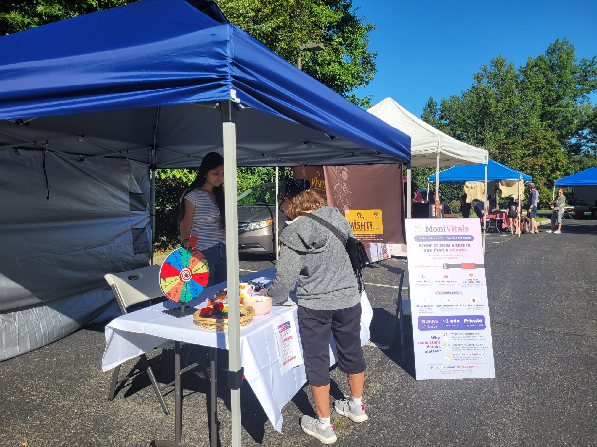
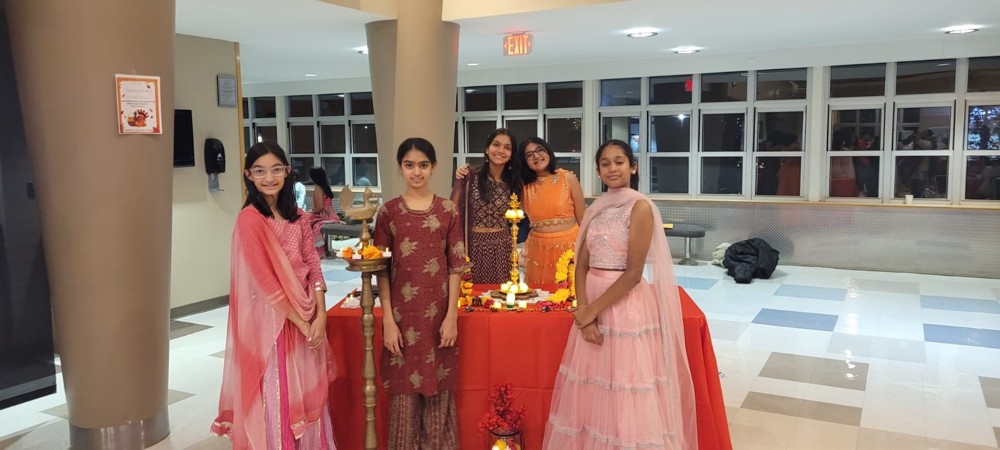
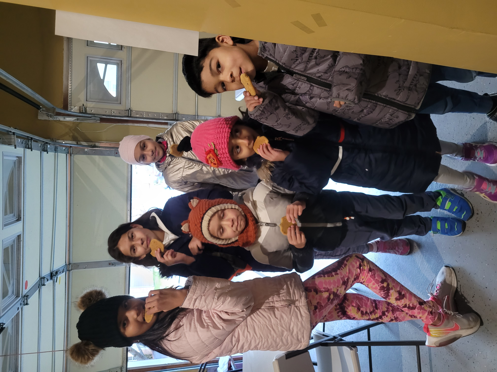

At the Intersection of Precision, Empathy & Art
Curiosity, rigorous inquiry, and moral responsibility guide every project—from PID autonomous control algorithms to elder care flute recitals and community food distribution.
Milestones in Inquiry, Creativity & Leadership
Moments across the Harkness table, scientific laboratories, robotics arenas, concert halls, and community centers.
 +
+
Academic Research Showcase
Presenting biochar eco-engineering findings to faculty and visiting scholars.

+MoniVitals Community Demonstration
Conducting live clinical telemetry tests at the community Farmers Market.
 +
+
Artis Senior Center Music Recital
Sharing music therapy through classical flute recitals with elderly residents.

+School APIDA Cultural Leadership
Leading cultural heritage celebrations and multicultural community dialogue.

+Culinary Creativity & Camp Life
Hands-on pastry baking and creative exploration beyond academic disciplines.
 +
+
John H. Imbrie Humanities Award
Awarded for extraordinary academic rigor, moral character, and humanistic discourse.
Curiosity, Rigor & Discourse at the Harkness Table
How collaborative inquiry and peer debate shape Aadya's approach to engineering, moral philosophy, and community stewardship.
Around the Harkness table, learning is not passive reception but active synthesis. Whether analyzing the epistemic boundaries of artificial intelligence in healthcare or debating environmental equity in water resource allocation, Aadya brings both quantitative data and deep ethical empathy to the discussion.
This interdisciplinary balance—uniting the analytical precision of autonomous code with the humanistic sensitivity of classical music and published poetry—defines her pursuit of knowledge.
Analytical Rigor
Grounding claims in verifiable empirical data and mathematical precision.
Empathetic Service
Direct grassroots aid addressing real human needs with compassion.
Creative Expression
Uniting classical flute, piano soloing, and published poetic verse.